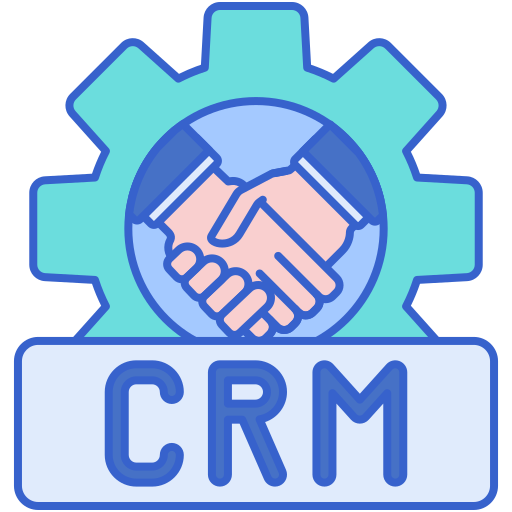
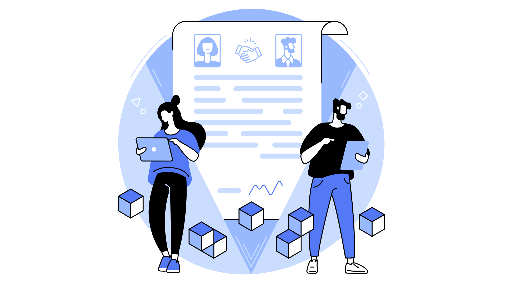

Transforming Data into
Business Decisions
Where geopolitics, data & business strategy meet
Market and Geopolitical Intelligence Analyst with 6+ years bridging political risk, sector analysis, and data science across global trade, logistics, and heavy industry — energy, mining, and raw-materials extraction. An International Relations background combined with hands-on technical depth (SQL, DAX, Python, Power BI, Google BigQuery, AWS Glue, NoSQL) turns regulatory shifts, commodity cycles, and country-risk signals into corporate intelligence and due-diligence-grade analysis for decision-makers operating across borders. Track record includes leading an internal intelligence initiative that converted raw data into strategy, driving a 374% gross profit increase ($1.9M) and 198% revenue growth through automated dashboards and sector-risk reporting. Comfortable reading government tenders, auction calendars, and policy documents across commodity supply chains, and building the data infrastructure — cloud data warehousing, workflow automation, data storytelling — that makes that reading actionable for trading houses, majors, and risk-advisory teams alike.
- Data Strategy
- Data Architecture
- Business Intelligence
- Data Science
- Geopolitical Reading
- Data Modeling
Tools I use to turn data into decisions
Power BI
DAX, Power Query, dashboards interativos
SQL
SQL Server, MySQL, BigQuery, modelagem
Python
Pandas, ETL, automação, APIs
CRM & Automação
Power Automate, RevOps, integrações
90-Day Sale & Market Intelligence Report
.png)
Tools used on this Study Case
.png)
Power BI
Pareto curve, cycle-time chart, loss breakdown, revenue consolidation, target tracking, deal table

CRM SYSTEM
Pipeline tracking, Win-rate calculation, Funnel data
Python
Chart Regeneration, Data Anonymization, Docx automation
Power Automate
Daily E-mail capture, Folder monitoring, CRM logging

Revenue Pace:
18.9% of annual target reached; current pace projects only 27% by year-end

Conversion Funnel:
2.3% of inbound e-mails convert to closed revenue (88% drop before reaching CRM)

Concentration Risk:
79.81% of revenue from one client; 88% from two service lines

Lost Revenue
$4.94M lost in 90 days — 72% from internal, controllable causes (pricing/delivery), not client decisions
Career timeline
Nari Brasil Holding
2026 - Market Intelligence Analyst
Deliver strategic market intelligence helps the organization navigate competitive landscapes and consumer behavior through in-depth data analysis.
Bridge the gap between raw data and business strategy by integrating data management, data architecture, and advanced analytics with marketing insights.
Perform market research, develop competitive intelligence, and build Power BI performance dashboards to support executive decision-making.
Manage data assets, architect scalable data solutions, and apply data science techniques to support marketing operations.
Convert market uncertainty into strategic clarity by building a solid, scalable, data-driven foundation for organizational planning.
COLI Shipping & Transport do Brasil
2023 - 2026: Sales Executive & Market Intelligence Analyst
Orchestrated data strategies that drove a 374% gross profit increase ($1.9M) and 198% revenue growth by developing automated Power BI dashboards for real-time KPI monitoring.
Streamlined executive decision-making through monthly data storytelling reports, aligning international pricing strategy with macroeconomic trends and cargo demand.
Led strategic commercial operations for global heavy machinery manufacturers and trading firms, specializing in the China–Brazil trade lane and high-value project cargo cycles.
Designed and led a proprietary market intelligence project applying International Relations methodologies and investment analysis to track global trade flows, using Pipedrive CRM and Skychart to convert raw data into high-value sales leads.
Managed end-to-end CRM-based project tracking to monitor team productivity, account adherence, and feasibility, ensuring commercial efforts stayed aligned with strategic goals and operational capacity.
Get in contact
Always glad to talk shop, sector trends, data pipelines, or where geopolitics and commodities intersect. If something here resonates with a role you're hiring for, or you just want to compare notes, reach out.